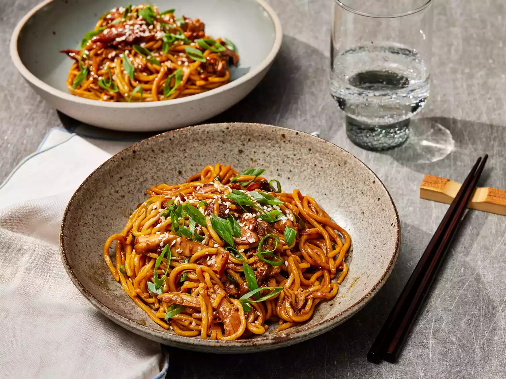

Honey Garlic Chicken Noodles

Ingredients
- 1/3 cup honey
- 1/4 cup lower-sodium soy sauce
- 6 medium garlic cloves, minced
- 2 tablespoons dark soy sauce or soy sauce
- 2 tablespoons oyster sauce
- 1 tablespoon Sriracha chile sauce
- 1 tablespoon Shaoxing wine or dry sherry
- 2 teaspoons grated fresh ginger
- 2 teaspoons toasted sesame oil
- 1/2 teaspoon kosher salt
- 1 1/2 pounds boneless, skinless chicken thighs
- 2 tablespoons tap water
- 1 tablespoon cornstarch
- 16 ounces fresh lo mein noodles, cooked according to package directions
- 3 large (1/2-ounce each) scallions, thinly sliced, plus more for garnish
- white sesame seeds
Directions
- Gather all ingredients.
- Stir together honey, soy sauce, garlic, dark soy sauce, oyster sauce, Sriracha, Shaoxing wine, ginger,
sesame oil, and salt in a 6-quart slow cooker. Place chicken thighs in a single layer into the honey
mixture.
- Cover and cook until chicken is tender, about 3 hours on HIGH and 5 hours on LOW.
- Stir together water and cornstarch in a small bowl until smooth. Transfer chicken from the slow cooker
to a cutting board and shred with a fork.
- With slow cooker on HIGH, stir in cornstarch mixture until slightly thickened, about 30 seconds. Turn
off slow cooker. Return shredded chicken to slow cooker along with cooked noodles and scallions; toss to
coat.
- Divide noodle mixture evenly among 6 serving bowls, and garnish with scallions and sesame seeds.